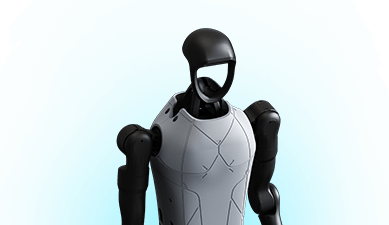

PRODUCT PROFILE / 配置资料
H1-2标准配置
宇树科技 · 双足人形 · 状态待核实
H1 的后续型号，采用独立参数记录，不能沿用 H1 的速度或重量。

完整规格与依据
身体规格
- 身高
- 178 cm 已核对原文 · 厂商资料
官网概述约值；尺寸表约 1788 mm
本项资料核验 2026-10-23 - 整机重量
- 70 kg 已核对原文 · 厂商资料
约值
本项资料核验 2026-10-23 - 自由度
- 27 DoF 已核对原文 · 厂商资料
尚无足够资料；未知不等于零或明确不支持。
本项资料核验 2026-10-23 - 末端执行器
- 选配Dex5-1或其他灵巧手 已核对原文 · 厂商资料
官方H1/H1-2两列独立核对；选配不代表默认订单含手，也不自动给出手部DoF。
本项资料核验 2026-10-24
运动与操作
- 操作负载
- 7 kg 已核对原文 · 厂商资料
H1-2列Arm normal load：额定约7 kg、峰值约21 kg；本字段采用额定，不将峰值当持续值，原表未细分单双臂/持续时长。
本项资料核验 2026-10-24 - 移动速度
- ≤ 2 m/s 已核对原文 · 厂商资料
官方原文 <2 m/s；范围显示上界，严格小于关系见本条件
本项资料核验 2026-10-23
电池与工作
- 工作时间
- 2 h 已核对原文 · 厂商资料
官方H1-2手册V1.0印刷20页独立写明综合运行续航约2小时，并非从H1继承。高速行走、姿态剧烈调整、屈腿/低姿态、负重和坡地影响实际时长；未给固定任务/负载试验协议，不代表额定满载连续2小时。
本项资料核验 2026-10-25 - 电池能量
- 864 Wh 已核对原文 · 厂商资料
尚无足够资料；未知不等于零或明确不支持。
本项资料核验 2026-10-23 - 电池容量
- 15,000 mAh 已核对原文 · 厂商资料
两列均直接写15 Ah/0.864 kWh；Ah换算mAh。67.2 V为最大电压，不能用它反推与标称能量矛盾的容量。
本项资料核验 2026-10-24
感知与开发
- 感知配置
- 3D 激光雷达 + 深度相机 已核对原文 · 厂商资料
尚无足够资料；未知不等于零或明确不支持。
本项资料核验 2026-10-23 - 计算平台
- Intel Core i5（平台）+Core i7（用户开发） 已核对原文 · 厂商资料
两代均明确标准配置；Orin NX在选配栏，不当作标配。CPU完整SKU与TOPS未列。
本项资料核验 2026-10-24 - 二次开发
- 待核实
【待继续采集】本轮已查硬件表，尚未逐接口核对SDK仓库对本代的权限/适配；开发用i7或通用资源入口不足以确认全部二开范围。
本项资料核验 2026-10-24；相关链接不表示厂商从未披露。
采购信息
- 美元报价
- 待核实
【报价待采集】所查H1/H1-2参数表不含绑定本配置的美元整机报价，仍待官方采购方案核实。
本项资料核验 2026-10-24；相关链接不表示厂商从未披露。 - 人民币报价
- 待核实
【报价待采集】所查参数表未取得本代人民币采购报价；不拿其他宇树型号或媒体目标价填充。
本项资料核验 2026-10-24；相关链接不表示厂商从未披露。